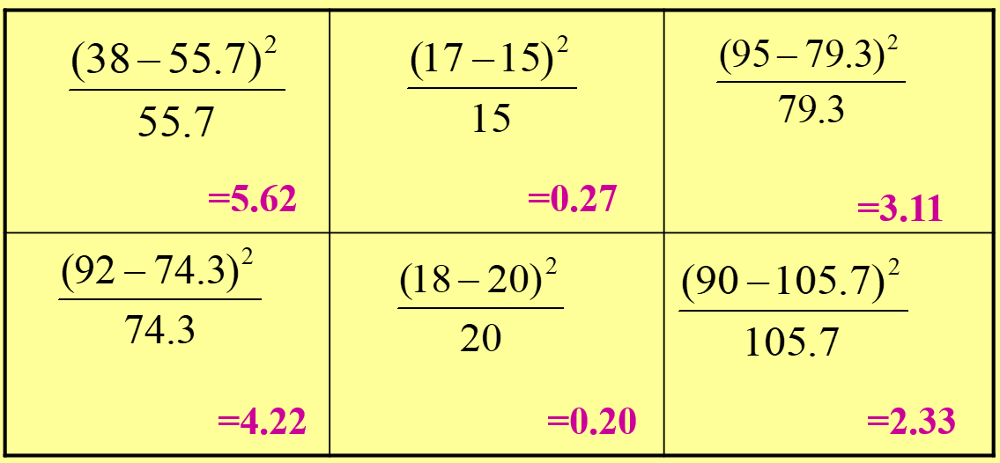

Chi Square
Test of Independence
1 Introduction
- Chi square test is the single most frequently used test of hypothesis in the social sciences
- It is a nonparametric test, so requires no assumption about the exact shape of the population distribution
- It is appropriate for nominally measured variables
- Can be used in the two-sample case, but can also be used when there are more than two samples
2 The Logic of Chi Square
2.1 The chi square test for independence
Two variables are independent if, for all cases in the sample, the classification of a case into a particular category of one variable has no effect on the probability that the case will fall into any particular category of the second variable.
To conduct a chi square test, the variables must first be organized into a bivariate table
3 Bivariate Tables
The idea of independence can be seen in bivariate tables
- Bivariate tables display joint classification of the cases on two variables
- The categories of the independent variable are used as column headings
- The categories of the dependent variable are used as row headings
- The marginals are the univariate frequency distributions for each variable
4 Bivariate Tables, cont.
- To find the number of cells in a table, multiply the number of categories of the independent variable by the number of categories of the dependent variable
- A bivariate table in which both variables have three categories has nine cells
- If two variables are independent, the cell frequencies will be determined by random chance
5 Bivariate Tables, cont.
- The null hypothesis states that the variables are independent
- If the null hypothesis is true, the expected cell frequencies are what we would expect to find if only random chance were operating
- The actual frequencies would differ little from the expected frequencies
- Therefore, it is still the hypothesis of no difference, but this time the difference measured is between the observed frequencies and the expected frequencies
6 Independence
- When the variables are independent of each other, there should be little difference between the observed frequencies and the expected frequencies
- These slight differences would be due to chance alone
- If the null is false (we reject the null), there should be large differences between the two
7 Computation of Chi Square
You need to compute a test statistic:
- Chi Square (obtained)
- Then you need to find Chi Square (critical) to compare with your test statistic
- Chi Square (critical) is found by looking in a chi square table (refer to your statistical table) for a particular alpha level and degrees of freedom
- degrees of freedom, df = (row - 1)(col - 1)
8 Computation, cont.
The Chi Square statistic is
the sum over all cells of
the squared difference between the obtained value and the expected value, which is then
divided by the expected frequency.
Formula 1 for Chi Square (obtained):
Formula 1
\chi^{2} = \sum \frac{(O - E)^{2}}{E}
9 Computation, cont.
- You have to calculate an expected frequency for each cell in the table
- Since marginals will be unequal in most cases, you need Formula 2 to compute the expected frequencies:
Formula 2
E_{i,j} = \frac{(Row_{i}\ Total) * (Column_{j}\ Total)}{Grand\ Total}
10 Examples:
10.1 Where Chi-Square Test can be applied?
The following are situations where we can use the Chi-Square test:
- Testing if there is an association between gender and preferred learning method (online/books).
- Testing if there is an association between political ideology and opinion on tax reform.
- Testing if there is an association between marital status and level of education.
11 How to write the hypothesis?
The Chi-Square tests the null hypothesis:
H_{0} : The two variables are independent (i.e. there is no association)
versus the alternative hypothesis:
H_{1} : The two variables are not independent (i.e. there is an association)
Therefore, when we reject the null hypothesis, we believe that the two variables affect each other, even though the test does not tell us how this association occurs between categories.
12 Working Example
Suppose that the state legislature is considering a bill to lower the legal drinking age to 18. A political scientist is interested in whether there is a relationship between party affiliation and attitude toward the bill. A random sample of 150 registered republicans and 200 registered democrats are asked their opinion about the proposed bill.
Calculating the Expected Value for a Particular Cell
Ex: Cell_{11}\ =\ \frac{150 * 130}{350}\ =\ 55.7
Numbers in Black are obtained (f_{o})
Numbers in Purple are expected (f_{e})


The calculated value for the chi square statistic is compared to the critical value found in Table.
\chi^{2}=5.62+0.27+3.11+4.22+0.20+2.33=15.75
Note: The distribution of the Chi Square Statistic is not normal and the critical values are only on one side. If the obtained values are close to the expected value, then the chi square statistic will approach 0. As the obtained value is different from the expected, the value of chi square will increase. This is reflected in the values found in Table.
The Degrees of Freedom for the Chi Square Test of Independence is the product of the number of rows minus 1 times the number of columns minus 1.
In our study, we had two rows (Republicans and Democrats) and three columns (For, Undecided, Against). Therefore, the degrees of freedom for our study is (2-1)(3-1) = 1(2) = 2. Using an a of .05, the critical value from Table would be 5.991 Since our calculated chi square is 15.75, we conclude that there IS a relationship between political party and opinion on lowering the drinking age, thereby rejecting the Null Hypothesis